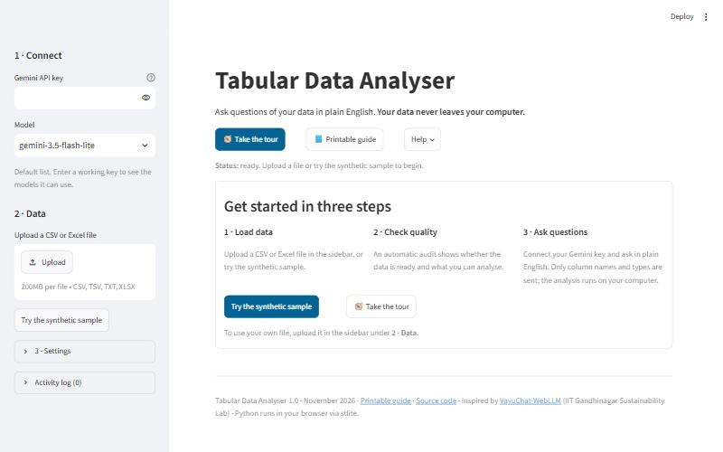
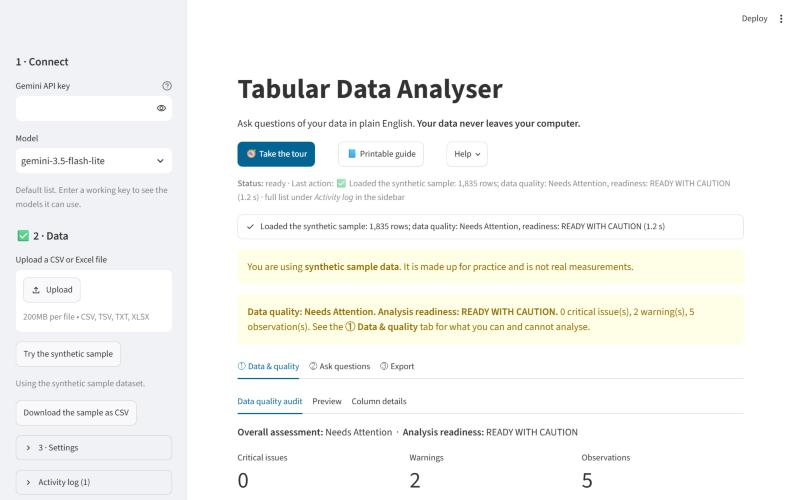
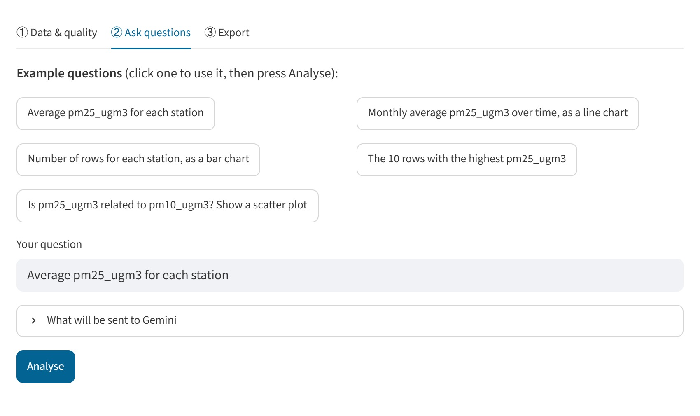
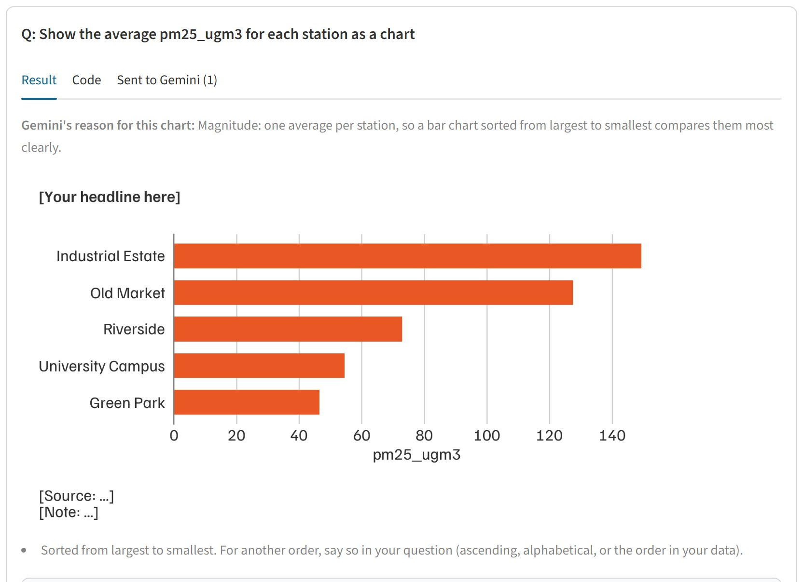
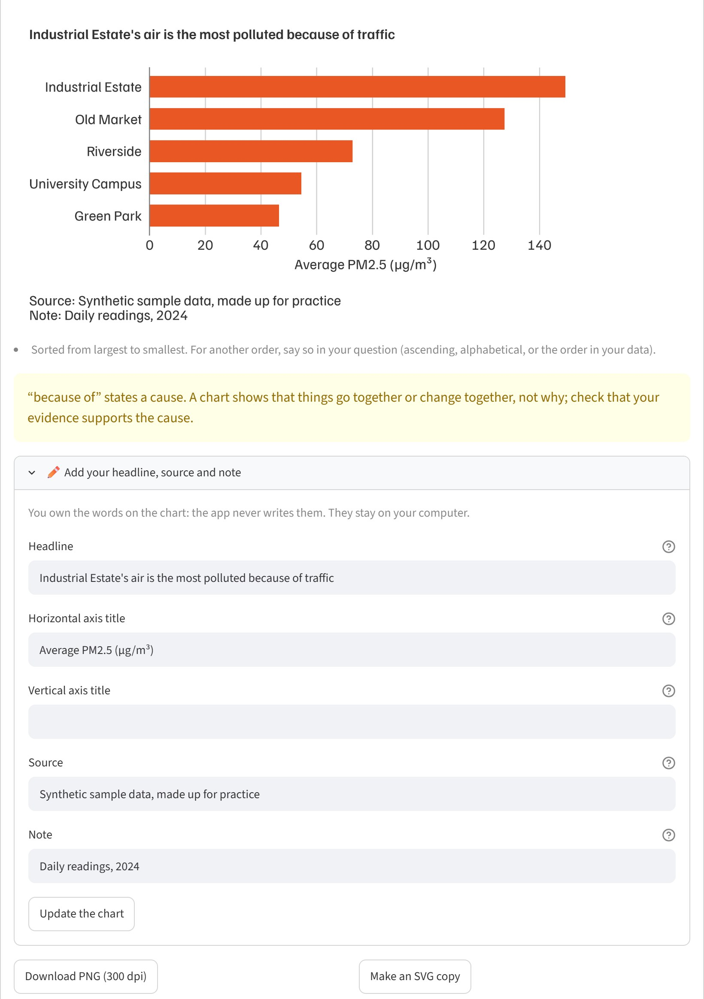
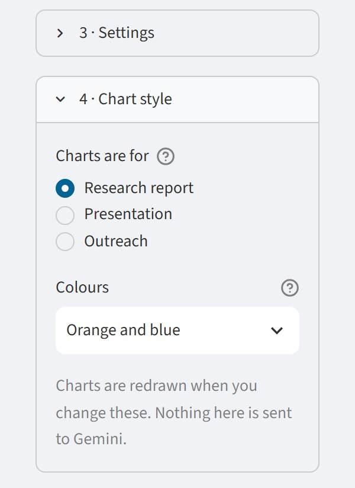
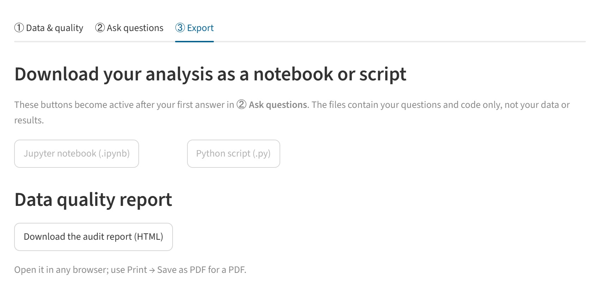
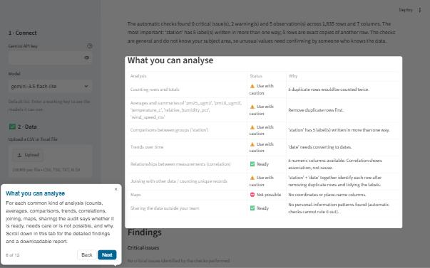
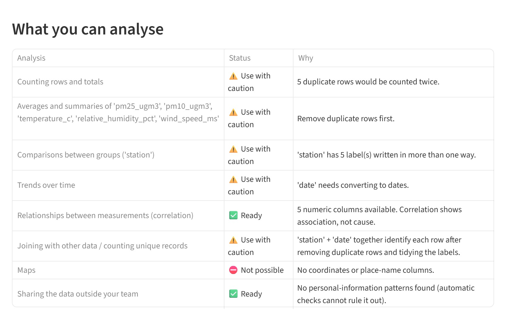

Tabular Data Analyser: user guide
Ask questions about a CSV or Excel file in plain English, check whether the data is ready for analysis, and learn from the Python code behind every answer, all without your data leaving your computer.
Version 1.0 · November 2026. Inside the app, the 🧭 Take the tour button walks you around the page itself, highlighting each part in turn.
1. What the app does
- Runs a complete Python environment inside your web browser. There is nothing to install, and your file is never uploaded to a server.
- Audits your data as soon as it loads, and tells you which kinds of analysis it is ready for.
- Lets you ask questions in plain English. Google's Gemini writes Python (pandas) code for the question, and the code runs on your computer to produce tables, numbers and charts.
- Shows and explains the code, so you can learn from it, edit it and reuse it.
It does not send your rows or values to Gemini. The model sees only your question, the column names and types, and the number of rows. Section 5 has the details.

2. Before you start
A browser and a little patience the first time
Use a recent version of Chrome, Edge, Firefox or Safari on a computer, not a phone. The first visit takes up to a minute while Python downloads and starts; later visits are usually quicker. Expect the browser tab to use roughly 0.6–1 GB of memory, so keep the app open in one tab only.
A Gemini API key
You need your own key to ask questions. (Loading data and the data quality audit work without one.)
- Go to Google AI Studio: API keys and sign in with a Google account.
- Create a key and copy it.
- In the app's sidebar under 1 · Connect, paste the key and press Enter.
3. Step by step
1Load your data
In the sidebar under 2 · Data, upload a CSV, TSV, TXT or Excel (.xlsx) file. The app detects the text encoding (for example UTF-8 or Windows-1252) and the separator (comma, semicolon, tab or pipe) for you, and the sidebar shows how the file was read. For Excel workbooks, only the first sheet is used.
No file to hand? Click Try the synthetic sample: a year of made-up daily air-quality readings for five fictional stations, with deliberate problems to practise on. A yellow banner reminds you that it is not real data.
2Check your data quality
As soon as the file loads, a progress box shows the app reading it and running the audit. A coloured banner then gives two verdicts: data quality and analysis readiness. Open the ① Data & quality tab for:
- What you can analyse: counts, averages, group comparisons, trends over time, correlations, joining with other data, maps and sharing, each marked Ready, Use with caution or Not possible, with the reason;
- the findings (critical issues, warnings and observations) and recommended actions;
- Preview (first 20 rows) and Column details;
- a button to download the audit report to share with colleagues.

Section 4 explains how to read the audit.
3Connect to Gemini
Paste your API key under 1 · Connect and press Enter. The app checks the key and, if it works, lists the models it can use in the Model menu. A tick appears next to 1 · Connect. If the key is rejected, see Troubleshooting.
4Ask a question
Open the ② Ask questions tab.
- Click one of the example questions (built from your column names) or type your own.
- Open What will be sent to Gemini to see exactly what will leave your browser. It never includes your rows or values.
- Press Analyse. A progress box shows each step: asking Gemini for code, running it on your computer and, if the code fails, asking Gemini to fix it (up to three attempts).
- Ask follow-up questions; the app remembers your last few questions and the code that answered them.

5Learn from the answer
Each answer is a card with three tabs:
| Tab | What it shows |
|---|---|
| Result | The table, chart or number. Tables can be downloaded as CSV. |
| Code | The Python code. Edit it and press Run my version to try changes; this runs on your computer and sends nothing. Explain this code asks Gemini for a plain-language, line-by-line explanation, sending only the code and the column list. |
| Sent to Gemini | A record of every request made for that answer. |
Charts in the CEEW house style
Charts follow the CEEW data viz skill: CEEW colours, the Familjen Grotesk font, and the skill's chart menu and rules. Gemini chooses a chart from your question and the column names; the rules that need the data are checked on your computer. When your question does not say how the chart should look, the rules choose:
- bars are horizontal when the names are long, hold at most 15 categories, and are sorted largest first (time periods stay in time order);
- a pie chart holds at most five slices; a slope chart at most four categories;
- labels are never set at a slant;
- with more than 10 categories, you can name one to three to highlight and the rest turn grey. The app never chooses what to highlight, because that is choosing the story.
When your question asks for a look, you get it. Name the chart or the look in your question ("a vertical bar chart", "a pie chart", "all 30 stations", "largest first", "labels turned 90 degrees") and the chart is drawn as asked. A yellow note above the chart says which CEEW chart rule it departs from and why the rule exists, so you can decide.
Some rules protect the accuracy of the chart and hold whatever you ask: a pie chart or 100% stacked bars only for parts of one whole that add up to 100%; bars that start at zero; no second y-axis; no trend lines or ranges the data does not contain; and lines that break where the data has gaps.

You own the words. A chart has no headline, source or note until you write them; each one appears only once you have entered it. Open Add your headline, source and note under the chart, type them and press Update the chart. A CEEW headline states the insight ("Gujarat added more rooftop solar than the next three states combined"), not a description ("Rooftop solar capacity by state"). The app flags words that claim a cause ("because of", "drives") or a record ("highest ever"), but never rewrites your text. The axis titles start from your column names; edit them to add the unit. What you type stays on your computer.

Set 4 · Chart style in the sidebar to Research report (A4 width, white), Presentation (half a 16:9 slide) or Outreach (1080 px on cream), and choose the colour pair. Charts already on the page are redrawn to match. Download each chart as a PNG at 300 dpi, or press Make an SVG copy for a file the Outreach and design teams can edit. Charts the skill leaves to the Outreach data viz team (for example line + column charts with two axes) are not drawn. Each chart takes about a second to draw in the browser; it is drawn again only when you change its words or the chart style.

6Take your work away
The ③ Export tab saves the session as a Jupyter notebook (.ipynb) or a Python script (.py) containing your questions and the code that answered them. Open the notebook in Jupyter, VS Code or Google Colab and run it next to your data file to reproduce every result. Results are not included, so the files can be shared without sharing your data. The buttons become active after your first answer. The data quality report can also be downloaded here.

Under the title, the status line shows the last action. The Activity log at the bottom of the sidebar lists recent actions and how long each took.

4. Understanding the data quality audit
The audit runs automatically on the whole file, in your browser, using fixed rules (no AI). It follows the data-quality-auditor-v2 method.
The two verdicts
| Data quality | Meaning |
|---|---|
| Good | No warnings or critical issues found by the checks. |
| Needs Attention | At least one warning: something that could affect results if ignored. |
| Poor | At least one critical issue, such as an empty file, many duplicate rows or a mostly empty table. |
| Analysis readiness | Meaning |
|---|---|
| READY | No material problems found for common analyses. |
| READY WITH CAUTION | Usable, but some analyses need care. Check the What you can analyse table. |
| NOT READY | Resolve the critical issues before relying on any results. |
Readiness is provisional, because the app does not know what you plan to analyse. The What you can analyse table is the better guide for a specific task.

Findings
- Critical issue: strong evidence of a problem that could invalidate results.
- Warning: a likely problem worth fixing or investigating, such as duplicate rows, inconsistent labels ("Delhi" vs "delhi "), numbers stored as text, or dates written day/month/year that Python would misread.
- Observation: a pattern worth knowing that is not necessarily a problem, such as possible outliers, skewed distributions or strong correlations.
5. How your data is handled
| Sent to Gemini | Never sent |
|---|---|
| Your question; the instructions in 3 · Settings; column names and types; the number of rows; for follow-ups, your recent questions and code; for Explain this code, the code. | The rows and values in your file; results, tables and charts; the file itself; the data quality audit; the headline, source and note you write for a chart. |
- What you type is sent. Avoid typing confidential values into questions, instructions or edited code.
- Sensitive column names? Tick Anonymise column names in 3 · Settings. Gemini then sees col_1, col_2, … instead of the real names. Answers may be less accurate.
- Error messages are cleaned of data values before a retry, and the generated code is blocked from reaching the internet.
- Follow your organisation's rules on which data may be used with AI tools, and on consent and confidentiality for survey or personal data.
6. Tips for good questions
- Use the exact column names shown in the audit's column summary, for example "average pm25_ugm3 by station".
- Say how to handle known problems, for example "treat station names case-insensitively", "remove duplicate rows first" or "dates are day/month/year".
- Ask for the output you want: "show a bar chart", "return a table sorted by…" or "give a single number".
- For charts, say what the reader should compare, and any choices that are yours: the chart type, vertical or horizontal, the sort order, which items to highlight, or the bin width for a histogram ("in bins of 5"). What you ask for is drawn, with a note where it departs from the CEEW chart rules.
- One question at a time. Build up with follow-ups ("now do the same by month").
- Check the code, especially filters and how missing values are treated, before using a result in your work. Explain this code helps.
7. Troubleshooting
| What you see | What to do |
|---|---|
| The page stays on "Starting…" for more than two minutes | Check your internet connection and reload. Corporate networks sometimes block the files the app downloads; try another network. |
| "Gemini rejected the API key" | Copy the key again from Google AI Studio, with no extra spaces, and press Enter. |
| "Quota or rate limit … reached" | Wait a minute and try again, or choose another model. Free-tier keys have tighter limits. |
| "The selected model is not available" | Choose another model from the Model menu. |
| "Could not read …" when uploading | Check that the file is CSV, TSV, TXT or .xlsx with a header row. Re-save it from Excel as "CSV UTF-8" if needed. |
| Dates or trends look wrong | Check the audit for a "day/month/year" warning and say how dates are written in your question. |
| "Could not answer the question after 3 attempts" | Rephrase more specifically: name the columns and say how to handle problems. Check the Code tab to see what went wrong. |
| The page becomes slow or the tab crashes | Close other copies of the app, reload after heavy sessions (export your work first), and filter very large files before uploading. |
8. Practice exercises with the synthetic sample
For self-study or training sessions. Load Try the synthetic sample first. The data is made up, so there are no right answers to look up, but the audit will tell you what to watch for.
- Read the audit. Which two warnings does it raise? Which analyses are marked Use with caution, and why?
- Duplicates. Ask: "How many exact duplicate rows are there? Show them." Then ask for the row count after removing them.
- Messy labels. Ask: "Average pm25_ugm3 for each station". Then ask again, adding "treat station names case-insensitively and ignore extra spaces". Compare the two answers.
- Trends. Ask: "Show the monthly average pm25_ugm3 as a line chart." In the Code tab, find where the dates are converted.
- Relationships. Ask: "Is pm25_ugm3 related to pm10_ugm3? Show a scatter plot and the correlation." Why does a strong correlation not show that one causes the other?
- A chart in the CEEW style. Ask: "Show the average pm25_ugm3 for each station as a chart, treating station names case-insensitively." Read Gemini's reason and the notes under the chart. Add a headline that states the insight, a source ("Synthetic sample data") and the unit in the axis title, then press Update the chart. Try a headline with "because of" and see what the app says.
- When a chart is refused. Ask: "Show the number of readings for each station name exactly as written in the data, as a pie chart." The messy names make more than five slices, so read the note: why is it drawn as bars? Then switch 4 · Chart style to Outreach and download the PNG.
- Edit and explain. In any answer's Code tab, change a number (for example a threshold), press Run my version, then press Explain this code.
- Export. Download the session as a notebook and open it in Jupyter or VS Code.